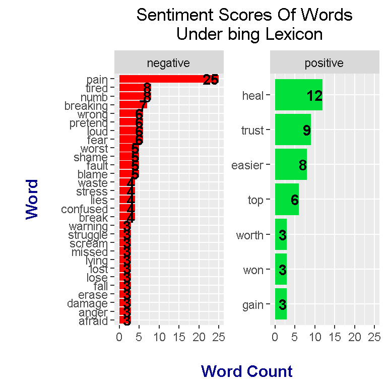
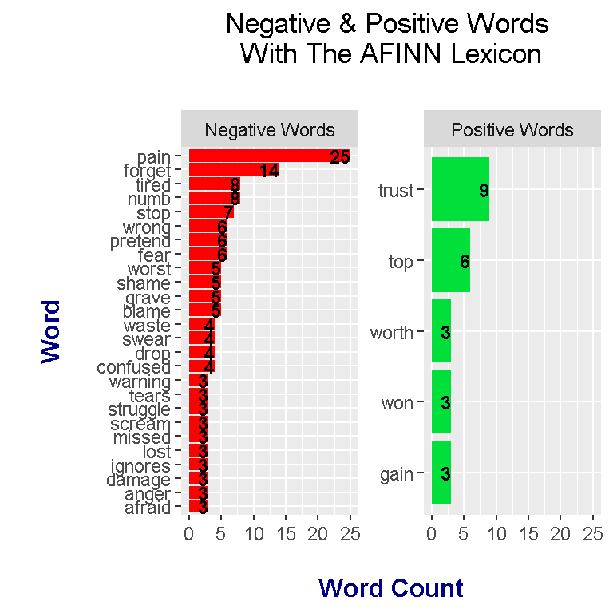

Text Analysis In R On Linkin Park - Meteora Song Lyrics
Hi. In this page, I share some experimental work that I have done in the programming language R. With R, I have done text analysis on the Linkin Park music album Meteora. I look at word counts and determine if the album overall is positive or negative. Results are shown with code outputs and plots.

Image Link Source: https://hardgraftrecords.com/products/linkin-park-meteora-lp
Sections
- The Meteora Album
- Loading In The Lyrics Into R
- Word Counts In Meteora
- Sentiment Analysis In Linkin Park - Meteora
- Bigrams In Meteora
The Meteora Album
Linkin Park’s Meteora album was the second studio album from the American band. This album was released in 2003 and contains the singles Somewhere I Belong, Faint, Numb, From The Inside and Breaking The Habit.
Song List In Linkin Park - Meteora
- Foreword
- Don’t Stay
- Somewhere I Belong
- Lying From You
- Hit The Floor
- Easier To Run
- Faint
- Figure.09
- Breaking The Habit
- From The Inside
- Nobody’s Listening
- Session [Instrumental]
- Numb
Loading In The Lyrics Into R
The lyrics from all the songs in the Meteora album were copied from a lyrics website and the pasted into a .txt file. Whenever a .txt file is loaded into R (R Studio), you need to set the working directory of the folder where the .txt file is located. Once the working directory is set, you can read in the .txt file into R.
In the code below, I load in the dplyr, ggplot2 and tidytext libraries into R. I then read in the lyrics and convert the lyrics into a data frame. The head() function is for previewing the lyrics.
The last line of code with the unnest_tokens() functions converts the data frame in such a way such that each word has its own row.
# Load libraries into R:
library(dplyr)
library(ggplot2)
library(tidytext)
# Read lyrics into R:
meteora_lyrics <- readLines("meteoraLyrics.txt")## Warning in readLines("meteoraLyrics.txt"): incomplete final line found on
## 'meteoraLyrics.txt'# Preview all the lyrics:
meteora_lyrics_df <- data_frame(Text = meteora_lyrics) # tibble aka neater data frame
head(meteora_lyrics_df, n = 15)## # A tibble: 15 x 1
## Text
## <chr>
## 1 Sometimes I need to remember just to breathe
## 2 Sometimes I need you to stay away from me
## 3 Sometimes I'm in disbelief I didn't know
## 4 Somehow I need you to go
## 5
## 6 Don't stay
## 7 Forget our memories
## 8 Forget our possibilities
## 9 What you were changing me into
## 10 Just give me myself back and
## 11 Don't stay
## 12 Forget our memories
## 13 Forget our possibilities
## 14 Take all your faithlessness with you
## 15 Just give me myself back andmeteora_words <- meteora_lyrics_df %>%
unnest_tokens(output = word, input = Text)
Word Counts In Meteora
After the unnest_tokens() functions, we can start to find word counts in the lyrics. One thing to consider is that the song lyrics contain words that make sentences flow but have no/little meaning on their own. These words are called stop words. Examples of stop words include the, and, me, you, of, etc. An anti_join() from R’s dplyr package will remove words from the lyrics in meteora_words.
The use of the count() function will extract word counts.
# Word Counts In Meteora:
# Remove English stop words from Meteora:
# Stop words include the, and, me , myself, of and so on.
meteora_words <- meteora_words %>%
anti_join(stop_words) ## Joining, by = "word"# Word Counts:
meteora_wordcounts <- meteora_words %>% count(word, sort = TRUE)
head(meteora_wordcounts, n = 15)## # A tibble: 15 x 2
## word n
## <chr> <int>
## 1 feel 27
## 2 wanna 27
## 3 pain 25
## 4 forget 14
## 5 inside 14
## 6 time 14
## 7 stay 13
## 8 heal 12
## 9 listening 11
## 10 memories 11
## 11 heart 10
## 12 nobody's 10
## 13 stand 9
## 14 trust 9
## 15 caught 8
Now that we have word counts, the results can be displayed in the form of a bar graph with the use of R’s ggplot2 package.
In the code below, the filter() function is used to extract words with a count greater than 8. In geom_col(), I make the bars blue with the fill argument. Labels are added the labs() and geom_text add on functions.
# We can now make a plot of the word counts.
# ggplot2 Plot (Counts greater than 8)
# Bottom axis removed with element_blank()
# Counts in the bar with geom_text.
meteora_wordcounts %>%
mutate(word = reorder(word, n)) %>%
filter(n > 8) %>%
ggplot(aes(word, n)) +
geom_col(fill = "blue") +
coord_flip() +
labs(x = "Word \n", y = "\n Count ", title = "Word Counts In Linkin Park - Meteora \n") +
geom_text(aes(label = n), hjust = 1.2, colour = "white", fontface = "bold") +
theme(plot.title = element_text(hjust = 0.5),
axis.title.x = element_blank(),
axis.ticks.x = element_blank(),
axis.text.x = element_blank(),
axis.title.y = element_text(face="bold", colour="darkblue", size = 12))
From the plot, the top words are wanna, feel, pain and time. The word wanna is slang for want to.
Sentiment Analysis In Linkin Park - Meteora
Sentiment analysis determines whether a piece of text is viewed as positive or negative. This analysis is subjective as different people have different views on the connotations of certain words. The lyrics in Linkin Park - Meteora are analysed with three lexicons. These three lexicons are bing, AFINN and nrc.
Bing Lexicon
With our wordcounts in R, we select the words from the lyrics which are the same as the words from the list of words associated with the bing lexicon.
### bing sentiment
## get_sentiments("bing")
meteora_words_bing <- meteora_wordcounts %>%
inner_join(get_sentiments("bing"), by = "word") %>%
ungroup()
head(meteora_words_bing)## # A tibble: 6 x 3
## word n sentiment
## <chr> <int> <chr>
## 1 pain 25 negative
## 2 heal 12 positive
## 3 trust 9 positive
## 4 easier 8 positive
## 5 numb 8 negative
## 6 tired 8 negative
The words with their counts and sentiment are plotted with ggplot2.
meteora_words_bing %>%
filter(n > 3) %>%
ggplot(aes(x = reorder(word, n), y = n, fill = sentiment)) +
geom_bar(stat = "identity", position = "identity") +
geom_text(aes(label = n), colour = "black", hjust = 1, fontface = "bold") +
coord_flip() +
labs(x = "\n Word \n", y = "Word Count \n", title = "Sentiment Scores Of Words \n Under bing Lexicon") +
theme(plot.title = element_text(hjust = 0.5),
axis.title.x = element_text(face="bold", colour="darkblue", size = 12),
axis.title.y = element_text(face="bold", colour="darkblue", size = 12)) +
scale_fill_manual(values=c("#FF0000", "#01DF3A"), guide=FALSE)
Under the bing lexicon, the most frequent word is pain. The word pain is associated with a red bar which signals that pain is a negative word. Heal is the second most frequent word which has a positive sentiment. By looking at the colour of the side bars, the most frequent words have a negative sentiment for the most part. This plot does suggest that the album Meteora is a mostly negative (or dark) album.
In ggplot2, you can produce separate sentiment bar graphs in one plot. One bar graph is for positive words and the second bar graph is for negative words. The add on function facet_wrap() allows for side by side graphs within one plot as shown below.
# Separate Sentiment plots for positive and negative words (word counts > 2):
meteora_words_bing %>%
filter(n > 2) %>%
ungroup() %>%
mutate(word = reorder(word, n)) %>%
ggplot(aes(word, n, fill = sentiment)) +
geom_col(show.legend = FALSE) +
geom_text(aes(label = n), colour = "black", hjust = 1, fontface = "bold") +
facet_wrap(~sentiment, scales = "free_y") +
labs(x = "\n Word \n", y = "\n Word Count ", title = "Sentiment Scores Of Words \n Under bing Lexicon") +
theme(plot.title = element_text(hjust = 0.5),
axis.title.x = element_text(face="bold", colour="darkblue", size = 12),
axis.title.y = element_text(face="bold", colour="darkblue", size = 12)) +
scale_fill_manual(values=c("#FF0000", "#01DF3A"), guide=FALSE) +
coord_flip()
From the plot, you can clearly see that there are more negative words than positive words from the album lyrics.
AFINN Lexicon
It is expected that the AFINN lexicon will produce different results from using the bing lexicon. Instead of classifying a word as positive or negative like in the bing lexicon, the AFINN lexicon gives select words a score from -5 to +5. Negative scores are for words with negative sentiment while positive scores are for words with positive sentiment. Scores of zero are associated with neutral words.
### AFINN sentiment
meteora_words_AFINN <- meteora_wordcounts %>%
inner_join(get_sentiments("afinn"), by = "word") %>%
mutate(is_positive = score > 0)
head(meteora_words_AFINN)## # A tibble: 6 x 4
## word n score is_positive
## <chr> <int> <int> <lgl>
## 1 pain 25 -2 FALSE
## 2 forget 14 -1 FALSE
## 3 trust 9 1 TRUE
## 4 numb 8 -1 FALSE
## 5 tired 8 -2 FALSE
## 6 stop 7 -1 FALSE
The most frequent word is pain which has an AFINN sentiment score of -2. Through the use of dplyr’s mutate() function, I have added an extra column called is_positive which classifies the word as positive or negative depending on the word score. This is_positive variable will be helpful for plotting.
Plotting the results under the AFINN lexicon is not much different that the one for bing.
meteora_words_AFINN %>%
filter(n > 2) %>%
ggplot(aes(x = reorder(word, n), y = n, fill = is_positive)) +
geom_bar(stat = "identity", position = "identity") +
geom_text(aes(label = n), colour = "black", hjust = 1, fontface = "bold", size = 3.1) +
labs(x = "\n Word \n", y = "\n Word Count ", title = "Sentiment Scores Of Words \n With AFINN Lexicon") +
theme(plot.title = element_text(hjust = 0.5),
axis.title.x = element_text(face="bold", colour="darkblue", size = 12),
axis.title.y = element_text(face="bold", colour="darkblue", size = 12)) +
scale_fill_manual(values=c("#FF0000", "#01DF3A"), guide=FALSE) +
coord_flip()
The add on function facet_wrap() is used again to produce side by side bar graphs in one plot. I have made a slight modification on the labels. The word_labels object is a vector that produces the label “Negative Words” for FALSE and “Positive Words” for TRUE. This word_labels is used in the as_labeller() function in the labeller argument for facet_wrap().
# Positive and negative plots separated with facet_wrap():
# Change labels
# (Source: https://stackoverflow.com/questions/3472980/ggplot-how-to-change-facet-labels)
word_labels <- c(
`FALSE` = "Negative Words",
`TRUE` = "Positive Words"
)
meteora_words_AFINN %>%
filter(n >= 3) %>%
ggplot(aes(x = reorder(word, n), y = n, fill = is_positive)) +
geom_bar(stat = "identity", position = "identity") +
geom_text(aes(label = n), colour = "black", hjust = 1, fontface = "bold", size = 3.2) +
facet_wrap(~is_positive, scales = "free_y", labeller = as_labeller(word_labels)) +
labs(x = "\n Word \n", y = "\n Word Count ", title = "Negative & Positive Words \n With The AFINN Lexicon \n",
fill = c("Negative", "Positive")) +
theme(plot.title = element_text(hjust = 0.5),
axis.title.x = element_text(face="bold", colour="darkblue", size = 12),
axis.title.y = element_text(face="bold", colour="darkblue", size = 12)) +
scale_fill_manual(values=c("#FF0000", "#01DF3A"), guide=FALSE) +
coord_flip()
nrc Lexicon
With the nrc lexicon, there are no sentiment scores associated with the words. Words under this lexicon have the sentiment of either negative, positive, trust, fear, anger or sadness.
The inner_join() functions from R’s dplyr is used to extract words from the lyrics that are also in get_sentiments("nrc"). Next, the filter() function is used to extract the words which have the sentiment as positive or negative.
### nrc sentiment:
# get_sentiments("nrc")
meteora_words_nrc <- meteora_wordcounts %>%
inner_join(get_sentiments("nrc"), by = "word") %>%
filter(sentiment %in% c("positive", "negative"))
head(meteora_words_nrc)## # A tibble: 6 x 3
## word n sentiment
## <chr> <int> <chr>
## 1 pain 25 negative
## 2 forget 14 negative
## 3 heal 12 positive
## 4 numb 8 negative
## 5 real 8 positive
## 6 tired 8 negative
Once the counts are extracted, the counts can be plotted with the ggplot2 package.
meteora_words_nrc %>%
filter(n >= 3) %>%
ggplot(aes(x = reorder(word, n), y = n, fill = sentiment)) +
geom_bar(stat = "identity", position = "identity") +
geom_text(aes(label = n), colour = "black", hjust = 1, fontface = "bold", size = 3.2) +
facet_wrap(~sentiment, scales = "free_y") +
labs(x = "\n Word \n", y = "\n Word Count ", title = "Negative & Positive Words \n With The nrc Lexicon \n") +
theme(plot.title = element_text(hjust = 0.5),
axis.title.x = element_text(face="bold", colour="darkblue", size = 12),
axis.title.y = element_text(face="bold", colour="darkblue", size = 12)) +
scale_fill_manual(values=c("#FF0000", "#01DF3A"), guide=FALSE) +
coord_flip()
NOTE
These lexicons are helpful in classifying words as positive or negative but one should remember that these things are NOT perfect. There are words in the English language which classify as a verb instead of a noun and vice versa. In addition, these lexicons may not pick up context, jokes, sarcasm and the like.
Bigrams In Meteora
Analyzing single words on their own may not be enough. We can look at phrases with two words. Two word phrases are called bigrams.
The code for having bigrams require a slight modification in the unnest_tokens() function.
# Bigrams - Looking at phrases with two words
# (Trigrams looks at three word phrases.)
# Sometimes individual words are not enough, some words are linked with other words.
meteora_lyrics <- readLines("meteoraLyrics.txt")## Warning in readLines("meteoraLyrics.txt"): incomplete final line found on
## 'meteoraLyrics.txt'# Preview all the lyrics:
meteora_lyrics_df <- data_frame(Text = meteora_lyrics) # tibble aka neater data frame
head(meteora_lyrics_df, n = 15) ## # A tibble: 15 x 1
## Text
## <chr>
## 1 Sometimes I need to remember just to breathe
## 2 Sometimes I need you to stay away from me
## 3 Sometimes I'm in disbelief I didn't know
## 4 Somehow I need you to go
## 5
## 6 Don't stay
## 7 Forget our memories
## 8 Forget our possibilities
## 9 What you were changing me into
## 10 Just give me myself back and
## 11 Don't stay
## 12 Forget our memories
## 13 Forget our possibilities
## 14 Take all your faithlessness with you
## 15 Just give me myself back andmeteora_bigrams <- meteora_lyrics_df %>%
unnest_tokens(bigram, input = Text, token = "ngrams", n = 2)
# Look at the bigrams:
meteora_bigrams## # A tibble: 3,758 x 1
## bigram
## <chr>
## 1 sometimes i
## 2 i need
## 3 need to
## 4 to remember
## 5 remember just
## 6 just to
## 7 to breathe
## 8 breathe sometimes
## 9 sometimes i
## 10 i need
## # ... with 3,748 more rows
The bigrams have been extracted from the lyrics. In order to produce word counts, stop words need to be removed. To do this, the separate function from R’s tidyr package will separate the bigrams into two separate words and then the filter functions will filter out the stop words.
# Remove stop words from bigrams with tidyr's separate function
# along with the filter() function
library(tidyr)
bigrams_separated <- meteora_bigrams %>%
separate(bigram, c("word1", "word2"), sep = " ")
bigrams_filtered <- bigrams_separated %>%
filter(!word1 %in% stop_words$word) %>%
filter(!word2 %in% stop_words$word)
Counts can be produced with the count() function from R’s dplyr package.
# Filtered bigram counts:
meteora_bigrams_wordcounts <- bigrams_filtered %>%
count(word1, word2, sort = TRUE)
head(meteora_bigrams_wordcounts, n = 15)## # A tibble: 15 x 3
## word1 word2 n
## <chr> <chr> <int>
## 1 nobody's listening 10
## 2 wanna feel 8
## 3 wanna heal 8
## 4 heart stop 6
## 5 memories forget 6
## 6 stay forget 6
## 7 wrong move 6
## 8 anger held 3
## 9 blood sweat 3
## 10 damage anymore 3
## 11 habit tonight 3
## 12 hill struggle 3
## 13 listening call 3
## 14 pain head 3
## 15 pain til 3
Notice how these counts include the separate words. The unite() function here will unite the two words into bigrams along with their counts.
# Unite the words with the unite() function:
meteora_bigrams_wordcounts <- meteora_bigrams_wordcounts %>%
unite(bigram, word1, word2, sep = " ")
meteora_bigrams_wordcounts## # A tibble: 80 x 2
## bigram n
## * <chr> <int>
## 1 nobody's listening 10
## 2 wanna feel 8
## 3 wanna heal 8
## 4 heart stop 6
## 5 memories forget 6
## 6 stay forget 6
## 7 wrong move 6
## 8 anger held 3
## 9 blood sweat 3
## 10 damage anymore 3
## # ... with 70 more rows
Now that we have counts of the bigrams, these counts can be plotted with ggplot2.
# We can now make a plot of the word counts.
# ggplot2 Plot (Counts greater than 8)
# Bottom axis removed with element_blank()
# Counts in the bar with geom_text.
meteora_bigrams_wordcounts %>%
filter(n > 3) %>%
ggplot(aes(reorder(bigram, n), n)) +
geom_col(fill = "red") +
coord_flip() +
labs(x = "Bigram \n", y = "\n Count ", title = "Bigrams In Linkin Park - Meteora \n") +
geom_text(aes(label = n), hjust = 1.2, colour = "white", fontface = "bold") +
theme(plot.title = element_text(hjust = 0.5),
axis.title.x = element_blank(),
axis.ticks.x = element_blank(),
axis.text.x = element_blank(),
axis.title.y = element_text(face="bold", colour="darkblue", size = 12))
The most common bigram is nobody’s listening which is the title of one of the songs in the Meteora album. Coming in second place is the bigram wanna feel which is featured often in the single Somewhere I Belong on the album.
I don’t think this bigram plot provides that much useful information. It was an interesting exercise.
References
- R Reference Book: Text Mining With R - A Tidy Approach By Julia Silge and David Robinson
- https://stackoverflow.com/questions/3744178/ggplot2-sorting-a-plot
- R Graphics Cookbook By Winston Chang